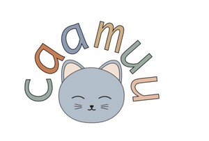
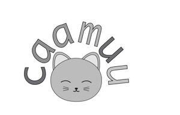

Trade Mark Journal No.2026/009 27 February 2026
UK00004335940 5 February 2026 (9,14,16,25,28,41)
Mark 1

Mark 2

- Class 9
- Audio books; Downloadable electronic books; Downloadable series of children's books; Publications in electronic format [downloadable]; Downloadable digital photos; Electronic publications recorded on computer media; Pre-recorded videos; Downloadable videos; Pre- recorded digital audio tapes; Audio recordings; Podcasts; Downloadable podcasts; Videocasts; Downloadable videocasts; Downloadable publications; Mobile apps; Mobile application software; Application software for mobile phones; Smartphone software; Application software for mobile devices; Smartphone software applications, downloadable; Computer application software for mobile phones; Downloadable software in the nature of a mobile application; Downloadable smart phone applications (software); Downloadable software applications for mobile phones; Mobile software; Application software for smart phones; Downloadable applications for mobile devices; Downloadable mobile applications for use with wearable computer devices; Educational mobile applications; Educational tablet applications; Downloadable computer software applications; Downloadable application software; Application software for wireless devices; Computer application software for streaming audio-visual media content via the internet; Software related to handheld digital electronic devices; Audio visual recordings; Training guides in electronic format; Downloadable educational course materials; Downloadable educational media.
- Class 14
- Keyrings; Keyrings of common metal; Key holders [trinkets or fobs]; Key chains [split rings with trinket or decorative fob]; Key rings and key chains, and charms therefor; Decorative key rings; Keyrings; Non-metal key rings; key charms [trinkets or fobs].
- Class 16
- Books; Non-fiction books; Fiction books; Books for children; Educational books; Printed books; Albums for stickers; Pens; Pencils; Pencil cases; Roll- up pencil cases; Pen cases; Stationery cases; Series of non-fiction books; Information books; Series of fiction books; Printed publications; Activity books; Printed lectures; Educational publications; Study guides; Printed guides; Quick reference pocket guides; Printed teaching activity guides; Teaching manuals; Instruction manuals; Information booklets; Instructional manuals for teaching purposes; Training manuals; Booklets; Resource books; Printed matter; Diaries [printed matter]; Printed teaching materials; Printed lessons; Printed cards; Printed diagrams; Printed educational materials; Printed informational cards; Printed stories in illustrated form; Printed curricula; Pamphlets; Printed pamphlets; Printed booklets; Educational publications; Writing materials.
- Class 25
- Infant clothing; Sleepwear; Nightwear; Loungewear; Nightgowns; Pyjamas; Nightshirts; Nightdresses; Playsuits [clothing]; Clothing layettes; Sleeping garments; Clothing for infants; One-piece clothing for infants and toddlers; Baby layettes for clothing; Pajama bottoms; Baby bodysuits; Clothing for children.
- Class 28
- Toys; Cuddly toys; Stuffed toys; Plush toys; Toys for babies; Fidget toys; Infant toys; Soft toys; Cloth toys; Developmental toys; Fluffy toys; Stuffed animals [toys]; Stuffed and plush toys; Children's toys; Articles of clothing for toys; Stuffed bean-filled toys; Toy animals; Plush toys with attached comfort blanket.
- Class 41
- Education and training services; Provision of education and training; Providing on line electronic publications; Providing on line electronic publications, not downloadable; Organisation of educational events; Arranging and conducting of educational discussion groups, not on-line; Workshops for educational purposes; Conducting courses, seminars and workshops; Planning of lectures for educational purposes; Development of educational materials; Workshops for recreational purposes; Online education services; Arranging and conducting of workshops and seminars; Provision of online tutorials; Conducting workshops and seminars in personal awareness; Conducting workshops and seminars in self-awareness; Provision of online training; Providing online publications, not downloadable; Seminars; Distance learning services provided on line; Workshops for training purposes; Meditation training; Teaching of meditation practices; Self-awareness courses [instruction]; Education services relating to meditation; Training for parents in parenting skills; Training in communication techniques; Education, teaching and training; Coaching [training]; Training or education services in the field of life coaching; Providing on line courses of instruction; Provision of training information via podcasts; Creation [writing] of educational content for podcasts; Providing on-line non- downloadable video content; Providing on-line non-downloadable audio content; Providing online training seminars; Educational services for providing courses of instruction; Providing information in the field of education; Production of educational sound and video recordings; Educational services in the nature of coaching.
Deborah Richards
Representative: Get Your Business Started Ltd